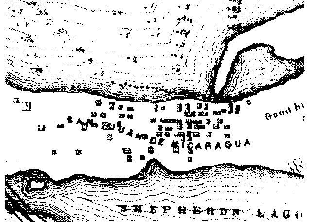
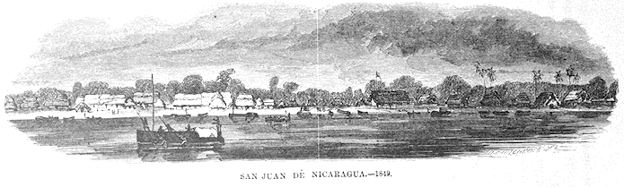
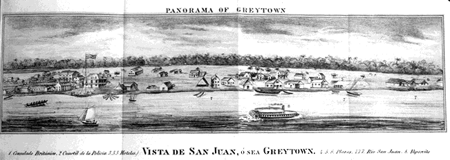
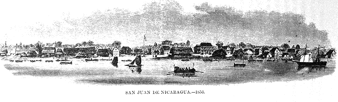
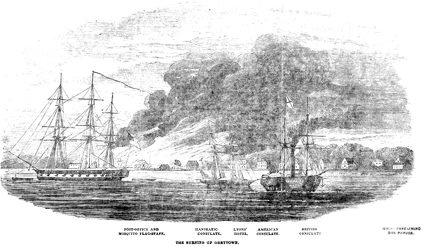

(approximately 1400 by 1000 meters - North up)
Childs, Orville Whitmore. 1852. Report of the survey and estimatesof the cost of constructing the interoceanic canal, from the harbor ofSan Juan del North, on the Atlantic, to the . . .. New York: W.C. Bryant.

Squier 1849
Squier, Ephrain G. 1854. San Juan de Nicaragua. Harper's New MonthlyMagazine 10: 50- 61.

Molina 1851
Molina, Felipe. 1851. Bosquejo de la Republica de Costa Rica, seguidode apuntamientos para su historia. Con varios mapas, vistas y retratos.New York: S.W. Benedict.

Squier 1853
Squier, Ephrain G. 1854. San Juan de Nicaragua. Harper's New MonthlyMagazine 10: 50- 61.

Illustrated London News 1854
Illustrated London News. 1854. Destruction of Greytown. (Aug.19).